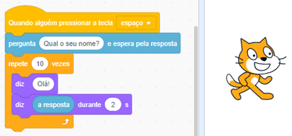
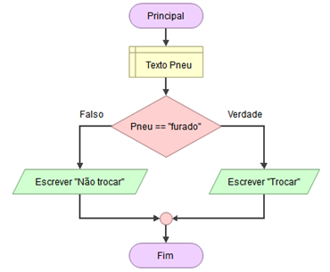
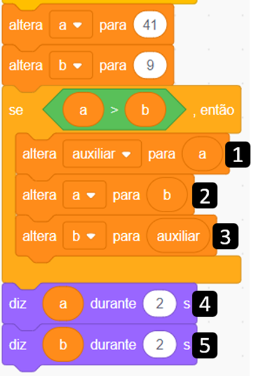
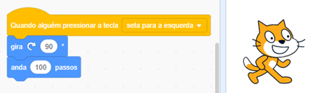
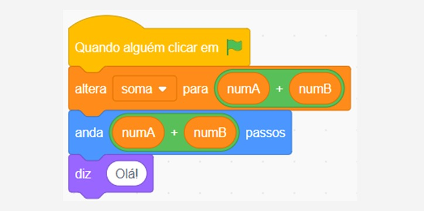

1. Observe com atenção o código a seguir desenvolvido no Scratch.
A respeito do Scratch e de seus diversos tipos de blocos, analise as afirmativas a seguir e assinale V para a(s) Verdadeira(s) e F para a(s) Falsa(s).
Assinale a alternativa que apresenta a sequência correta.
Resposta Correta: F-V-F-V.
2. Leia o trecho a seguir sobre operadores aritméticos e precedência matemática:
Os operadores de soma, subtração, divisão e multiplicação podem ser utilizados com números inteiros e reais. Se um inteiro for dividido por um real, o resultado será real. A ordem de precedência é: multiplicação, divisão, soma e subtração.
Considerando esse contexto, avalie as seguintes asserções e a relação proposta entre elas.
Porque:
A respeito dessas asserções, assinale a opção correta.
Resposta Correta: A asserção I é uma proposição verdadeira e a II é uma proposição falsa.
3. Sobre algoritmos, podemos afirmar que:
As afirmativas verdadeiras são:
Resposta Correta: I e IV, apenas.
4. Em C#, podemos utilizar os operadores aritméticos para manipular os dados de variáveis, bem como, realizar cálculos assim como na matemática. Considere o código-fonte a seguir escrito em C#.
Considerando esse contexto, avalie as seguintes asserções e a relação proposta entre elas.
int total; total = 5 + 4 * 18 / 3 * 3 % 3 - 1; Console.WriteLine(total);
PORQUE
A respeito dessas asserções, assinale a opção correta.
Resposta Correta: A asserção I é verdadeira e a II é falsa.
5. Leia o texto a seguir com atenção:
O pensamento computacional é o processo de abordar um problema de maneira sistemática e criar uma solução que pode ser realizada por um computador.
A partir desta informação, é possível afirmar que o pensamento computacional:
Resposta Correta: Ensina o uso de abstração e decomposição na solução de problemas complexos.
6. Analise com atenção o código a seguir, que possui algumas variáveis e realiza algumas operações sobre elas:
string var1;
int var2;
double var3;
Console.WriteLine("Digite seu nome");
var1 = Console.ReadLine();
Console.WriteLine("Digite sua idade");
var1 = Console.ReadLine();
var2 = int.Parse(var1);
var3 = Math.Pow(var2, 2);
Console.WriteLine(var3);
Considerando essas informações, analise as afirmativas a seguir:
Resposta Correta: I e IV, apenas.
7. Leia e associe as duas colunas com relação aos pilares do pensamento computacional.
| I. Decomposição | A. Resolve problemas menores e mais fáceis de serem gerenciados obtidos a partir de um problema complexo. |
| II. Abstração | B. Divide um problema em passo a passo para que ele seja resolvido por meio de instruções ou regras. |
| III. Algoritmo | C. Separa do problema apenas as partes importantes, ignorando as partes menos importantes. |
Assinale a alternativa que traz a associação correta entre as duas colunas:
Resposta Correta: I-A; II-C; III-B.
8. Observe com atenção o fluxograma a seguir.
A respeito dos componentes que fazem parte de um fluxograma, analise as afirmativas a seguir e assinale V para a(s) Verdadeira(s) e F para a(s) Falsa(s).
Resposta Correta: V-V-V-F.
9. Observe com atenção o código a seguir:
Considerando o código apresentado, assinale a opção correta.
Resposta Correta: O objetivo é apresentar uma sequência ordenada dos valores, e o bloco auxiliar é essencial.
10. Observe com atenção o código a seguir desenvolvido no Scratch.
Considerando esse código, o significado dos blocos e suas saídas, analise as afirmativas a seguir:
Resposta Correta: I e IV, apenas.
11. Analise com atenção o código a seguir escrito em C#.
for(int x=-15; x<14; x++)
{
x++;
Console.WriteLine(x);
}
Assinale a alternativa que apresenta a análise correta sobre esse código.
Resposta Correta: Esta estrutura de repetição apresentará todos os números pares de -14 a 14.
12. Durante o desenvolvimento de programas, os operadores lógicos E e OU são usados para relacionar expressões. O resultado de uma operação lógica será VERDADEIRO ou FALSO. Ao utilizar o operador E, por exemplo, o resultado será VERDADEIRO somente se estiver entre dois operandos também VERDADEIROS.
Analise, então, as seguintes expressões:
Expressão 1: FALSO OU VERDADEIRO E FALSO E VERDADEIRO.
Expressão 2: FALSO E VERDADEIRO E FALSO OU VERDADEIRO.
Sobre as expressões 1 e 2, é corretor dizer que
Resposta Correta: o operador OU resultará VERDADEIRO quando qualquer um dos operandos também for verdadeiro. Logo, o resultado da expressão 2 será VERDADEIRO.
13. Em C# e em outras linguagens de programação, para que seja possível manipular dados, uma das necessidades é criar variáveis que armazenem temporariamente valores os quais podem ser numéricos (int ou float), texto (string) ou booleano (bool). Observe o código a seguir escrito em C#:
a = 5.95681545; b = Console.ReadLine(); c = 7 % 2; d = 3.5 * c;
Marque a alternativa que apresenta corretamente os tipos das variáveis a, b, c e d, respectivamente.
Resposta Correta: a: float; b: string; c: int; d: float.
14. No código a seguir, temos duas estruturas de repetição for. A externa, na linha 1, será executada 10 vezes. Ou seja, o for irá de 1 até 10. No escopo desse for, temos uma estrutura condicional if, a qual também possui internamente uma estrutura de repetição for, que é executada de 1 até 5.
for(int x = 1; x<10; x++)
if(x % 4 != 0 && x % 2 == 0)
for(int y = 1; y<5; y++)
Console.WriteLine(y);
Considerando as informações apresentadas, assinale a opção correta.
Resposta Correta: No total, a linha 4 será executada 8 vezes, apresentando a sequência 12341234.
15. Leia o texto a seguir:
Uma variável possui papel fundamental em um código: guardar dados. Elas podem armazenar apenas um dado por vez, logo, se uma variável chamada nome possui o conteúdo “João”, ao receber o valor “Maria”, a palavra “João” é perdida. Por outro lado, temos as estruturas condicionais, cuja principal característica é modificar o fluxo de um código de acordo com uma condição e, consequentemente, modificar o conteúdo de uma variável. Veja um exemplo de código fonte em C# que manipula uma única variável chamada txt e possui uma condicional.
string txt;
Console.WriteLine(“Digite seu nome”);
txt = Console.ReadLine();
if(txt != “Maria”){
Console.WriteLine(txt + “seu acesso não está autorizado”);
} else {
Console.WriteLine(txt + “seu acesso foi autorizado”);
Console.WriteLine(“bem vindo!”);
}
Marque a alternativa que explica corretamente a execução deste código:
Resposta Correta: O valor digitado pelo usuário na linha 3 será armazenado na variável txt e apresentado na linha 6 ou na linha 8.
16. Sobre variáveis em programação, podemos afirmar que:
As alternativas verdadeiras são:
Resposta Correta: II e IV, apenas.
17. Leia com atenção o texto a seguir:
Muitos problemas quantitativos e centrados em dados podem ser resolvidos usando o pensamento computacional e uma compreensão do pensamento computacional lhe dará uma base para resolver diversos tipos de problemas.
Dentre as habilidades do pensamento computacional, o componente principal que permite um programador criar um conjunto de etapas para desenvolver um programa de computador responsável por resolver problemas que têm impacto social no mundo real é a(o)
Resposta Correta: algoritmo.
18. As estruturas de decisão, ou estruturas condicionais, são utilizadas nos códigos para dividir um fluxo de processos em dois ou fluxos. Todo algoritmo que precisa de tomada de decisão necessita utilizar uma estrutura de controle como esta. Veja um exemplo de código a seguir:
int a = 4;
int b = 5;
if(a>1) {
if(b>1) {
Console.WriteLine("Valor de a " + a + " valor de b " + b);
}
}
De posse dessas informações e do conteúdo estudado sobre estruturas condicionais, analise as asserções a seguir e a relação proposta entre elas.
Porque
A seguir, assinale a alternativa correta:
Resposta Correta: As asserções I e II são proposições verdadeiras e a II é uma justificativa correta da I.
19. O código a seguir realiza a validação se um dado ano é bissexto ou não. Para calcularmos se um ano é bissexto ou não, temos, necessariamente, que considerar os seguintes fatores: o ano deve ser divisível por quatro, o resto da divisão do ano por 100 tem que ser maior que zero ou a divisão do ano por 400 precisa ser igual a zero. Analise o código com atenção.
double ano;
ano = Console.ReadLine();
if((ano % 4 == 0) && (ano % 100 > 0) || (ano % 400 == 0)){
Console.WriteLine("Ano bissexto");
} else {
Console.WriteLine("Ano não é bissexto");
}
Considerando as informações apresentadas, avalie as afirmações a seguir:
É correto o que se afirma em:
Resposta Correta: I e IV, apenas.
20. Analise com atenção o código a seguir que utiliza função com passagem de parâmetros, com três argumentos.
public int calcular(int x, ref int y, ref int z){
x = x + 10;
y = y + 10;
z = z + 10;
Console.WriteLine(x + " " + y + " " + z);
return y;
}
public static void Main (string[] args) {
int a = 4;
int b = 3;
int c = 2;
Program p = new Program();
p.calcular(a, ref b, ref c);
Console.WriteLine(a + " - " + b + " - " + c);
}
Os valores impressos na instrução da linha 17 serão:
Resposta Correta: 4 - 13 - 12
21. Observe com atenção os blocos da figura a seguir:
Analisando os blocos, é correto afirmar que:
Resposta Correta: a operação aritmética realizada nos blocos laranja (altera) e azul claro (anda) terá o mesmo resultado, porém com comportamentos diferentes.
22. Leia com atenção o texto a seguir:
O pensamento computacional requer a compreensão das capacidades dos computadores, a formulação de problemas a serem tratados por um computador e o projeto de algoritmos que um computador pode executar. O contexto e a abordagem mais eficazes para desenvolver o pensamento computacional é aprender ciência da computação; eles estão intrinsecamente conectados.
Fonte: K12 COMPUTER SCIENCE. K12 Computer Science Framework. Disponível em: https://k12cs.org/wp-content/uploads/2016/09/K%E2%80%9312-Computer-Science-Framework.pdf.
Sobre o pensamento computacional, assinale a alternativa que apresenta uma de suas práticas.
Resposta Correta: Desenvolver e usar abstrações.
23. Observe com atenção o pseudocódigo a seguir:
início
se temperatura == “40”
escreva(“ligar ar-condicionado”)
escreva(“fechar as janelas”)
senão
escreva(“ligar ventilador”)
escreva(“abrir as janelas”)
fim-se
fim
Sobre algoritmos, assinale a alternativa correta.
Resposta Correta: O pseudocódigo é utilizado para acelerar o ciclo de desenvolvimento de um código.
24. Leia com atenção o texto a seguir.
Um algoritmo é um procedimento computacional bem definido que pega algum valor como entrada e gera algum valor como saída. Em palavras simples, é uma sequência de etapas computacionais que converte a entrada em saída.
A respeito dos algoritmos e seus tipos de representações, analise as afirmativas a seguir e assinale V para a(s) Verdadeira(s) e F para a(s) Falsa(s).
Assinale a alternativa que possui a sequência correta.
Resposta Correta: V-F-V-V.